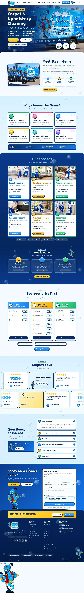
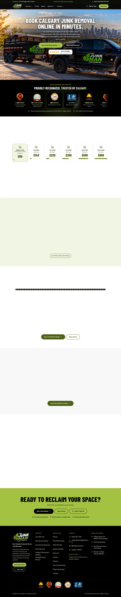
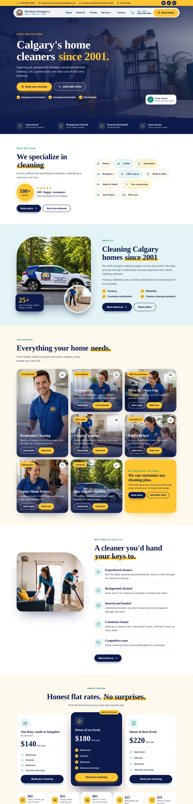
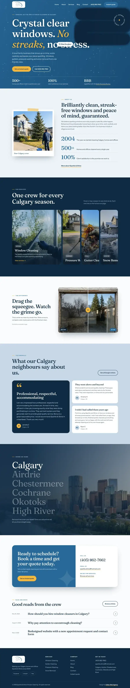
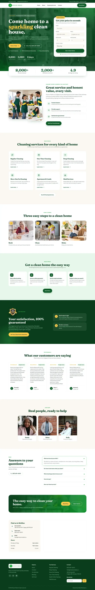
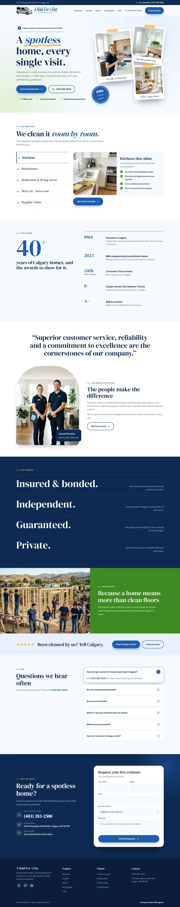

Calgary
Our primary market. Quadrants, condos, downtown towers and fast-growing communities.
Calgary page →From Calgary and Edmonton to Red Deer and Lethbridge, we help Alberta cleaning companies turn local searches into quote requests.
A cleaner in Calgary competes differently from one in Lethbridge or Fort McMurray. Customers search by city, town or camp, and busy seasons change from place to place.
CleaningDigital works only with cleaning companies, remotely by video call and email. We start with Calgary and are opening up to the rest of Alberta, so we plan around the real service area of each business, not a copy of one city page.
We work remotely, so these are areas whose cleaning companies we are happy to support. We do not claim offices in them.
Our primary market. Quadrants, condos, downtown towers and fast-growing communities.
Calgary page →University, hospital and government contracts, plus a wide, spread-out residential market.
Edmonton page →Central Alberta homes and commercial sites between the two big cities.
Southern Alberta cleaners serving the city, the university and nearby towns.
Local companies that rely on word of mouth and want to be found online.
Growing commuter communities next to Calgary with steady new-home demand.
Family homes and commercial cleaning on the edge of Edmonton.
Northern Alberta, including industrial, oil and gas and camp cleaning.
Months of cold bring salt, grit and dry indoor air. When the snow goes, enquiries for spring cleans, carpets and windows tend to rise. Plan pages and ad budgets around it.
Hail season and the occasional smoky summer can create sudden demand for exterior, window and indoor air-related cleaning. A flexible site lets you add a short seasonal page when it matters.
Around Fort McMurray and Grande Prairie, industrial sites and camps buy cleaning in volume. Those buyers look for safety, insurance and dependable crews, so the website has to build trust fast.
Edmonton has large institutions such as universities and hospitals that buy janitorial services through formal processes. Strong credentials pages help you get considered.
Airdrie, Cochrane, St. Albert and Sherwood Park have many busy households who want a reliable cleaner nearby. Local pages and reviews carry a lot of weight.
In Red Deer, Lethbridge and Medicine Hat, reputation travels quickly. A tidy Google profile and a few good reviews can make a real difference.
Service pages, a short quote form and a tap-to-call button that work well on a phone.
A complete Google Business Profile and area pages for places you genuinely serve.
Google Ads aimed at people who need a cleaner now, with call and form tracking.
See fixed website pricing, all services, web design, local SEO, the Calgary page or the Edmonton page.
Straight answers for Alberta cleaning company owners.
Ask Nakul directly on a free discovery call. No pressure, no sales script.
Book a discovery callYes. We start with Calgary, then work with owners across Alberta by video call and email. You do not need to be in the same city to get a clear plan.
Usually not. One strong website with honest service area pages for the places you really serve works better than many near-identical pages.
Alberta demand shifts with the seasons. Long winters lead into spring cleaning, carpet and window work. Summer brings move-outs, and hail or wildfire smoke can create short bursts of cleanup demand. Commercial and janitorial contracts run all year. Your site and ads can follow that rhythm.
We can build a website and search presence that speaks to those buyers, who tend to want proof of safety, insurance and reliability. We do not claim experience cleaning those sites ourselves, only in marketing cleaning companies.
No. Nobody can honestly guarantee a ranking. We focus on the work that earns visibility and measure calls and quote requests.
Book a short discovery call. We talk through your services, your area and the best first step.

Calgary, AB · Carpet and upholstery

Calgary, AB · Junk removal

Calgary, AB · Residential cleaning

Calgary, AB · Window cleaning

Calgary, AB · House cleaning

Calgary, AB · House cleaning
Book a discovery call and we will talk through your services, your area and the right next step.
Book a discovery call